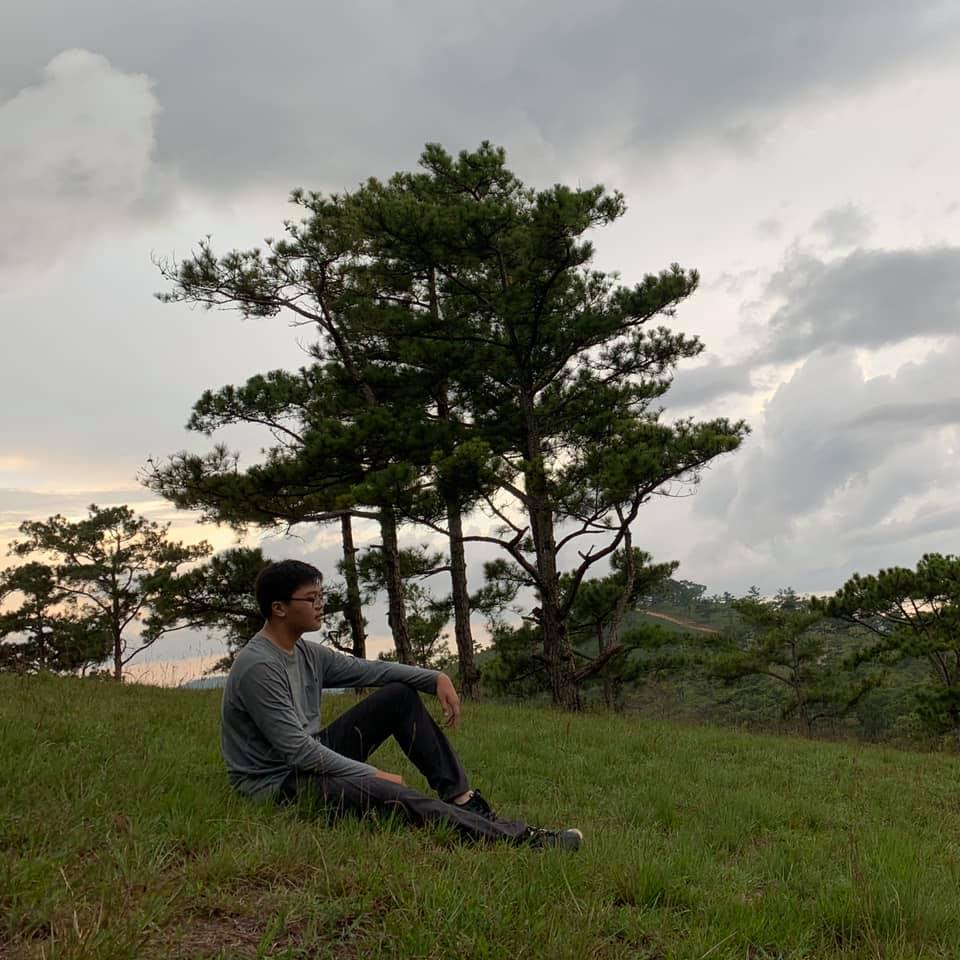
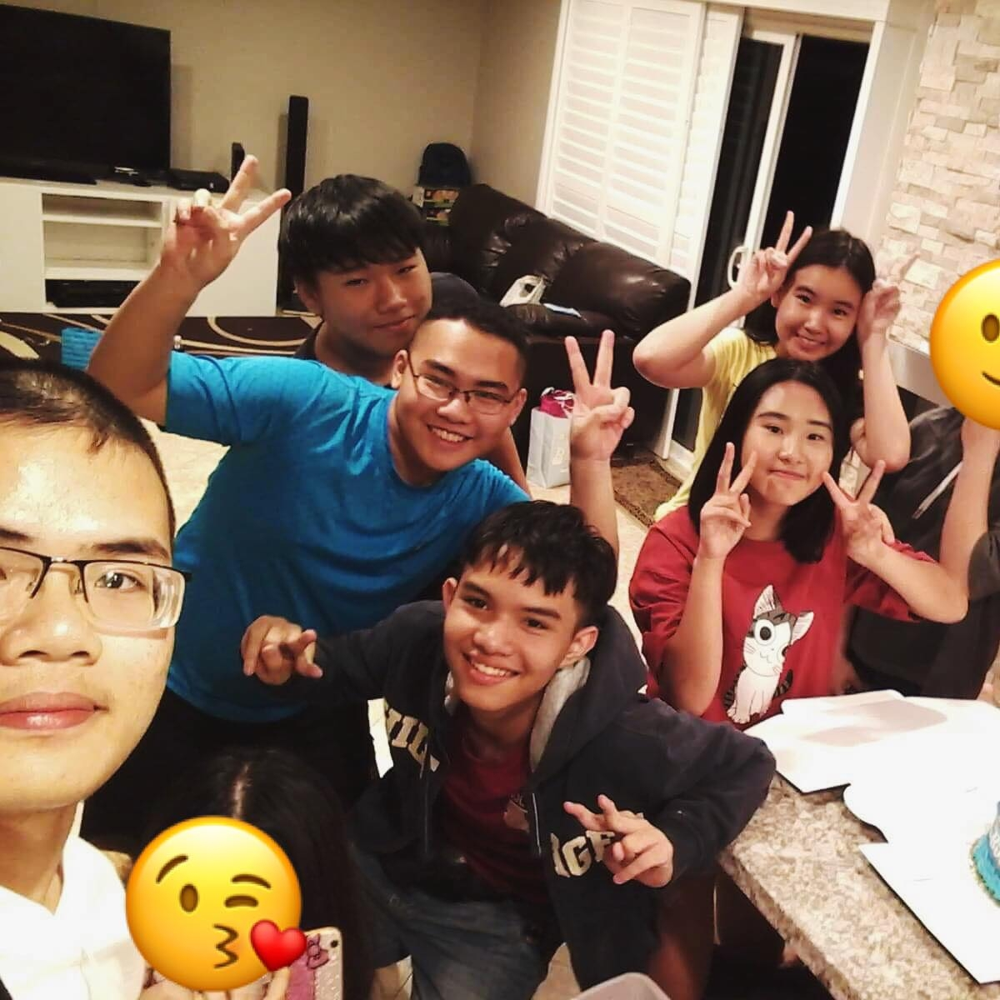

Team name
IT FUTURE PLAN
Members:
An Pham
Di Doan
Huy Le
Nhat Tran
Personal Information
 My full name Pham Hoang Thien An, my student id is s3818286. I am currently enrolled in RMIT South Saigon campus as a student of the Bachelor of engineering program. I am well acquainted with 3 languages, which is Vietnamese, English and Chinese and can fluently use them to communicate with others. My favorite sport is Volleyball. I enjoy playing it with my friends whenever we can. After enrolling into RMIT, I immediately reach out and join the Volleyball Club in this university because I am very passionate about it. I have an older brother who is an IT specialist, and since my brother usually shown me about the beautiful world of IT, I developed an interest in IT at quite a young age. When I was at 10th grade, I start learning about basic programming language like PASCAL and C++ at school and extra class.
 My full name is Tran Minh Nhat. My student number is s3924826. I speak Vietnamese mainly and English is my second language.
I studied English because I know the importance of having another language that can help you a lot. I am now in my first year at
RMIT University. I usually read light novels and play games in my free time, but I also play piano and go skateboarding. I
discovered that the IT business offers such a diverse range of vocations and domains that it is incredible that a late-twentieth-century
major can develop so swiftly. I selected IT because I believe this industry will be one of the potential leaders of mankind's science
and technology. I had heard of the phrase IT for three or four years, but it was only five months ago when I was deciding on my
university course that I began to explore some of its ideas. As a result, I must state that my senior year of high school encouraged
me to learn more, and it was around this time that my interest was developed. Through half of my first semester, I have gained some
basic experience of Python language, basic concepts of computer systems, and building simple websites with HTML.
My full name is Tran Minh Nhat. My student number is s3924826. I speak Vietnamese mainly and English is my second language.
I studied English because I know the importance of having another language that can help you a lot. I am now in my first year at
RMIT University. I usually read light novels and play games in my free time, but I also play piano and go skateboarding. I
discovered that the IT business offers such a diverse range of vocations and domains that it is incredible that a late-twentieth-century
major can develop so swiftly. I selected IT because I believe this industry will be one of the potential leaders of mankind's science
and technology. I had heard of the phrase IT for three or four years, but it was only five months ago when I was deciding on my
university course that I began to explore some of its ideas. As a result, I must state that my senior year of high school encouraged
me to learn more, and it was around this time that my interest was developed. Through half of my first semester, I have gained some
basic experience of Python language, basic concepts of computer systems, and building simple websites with HTML.
 My name is Doan Thien Di. My birthday is September 15th, 2003. My student ID is s3926977. I was born and raised in Ho Chi Minh City.
This is my first semester at RMIT University as a first-year student. I can speak Vietnamese, English. I am not a sporty person and
I rarely do sports. However, I can play table tennis as it was compulsory in my secondary school. I love reading, from novels to articles
or interesting facts about the world around us. My free time is spent on learning new skills, especially new languages. I am interested
in AI when talking about my favorite field of IT. I have participated in some competitions, such as the WRO or the Arduino competition
between high schools in HCMC.
My name is Doan Thien Di. My birthday is September 15th, 2003. My student ID is s3926977. I was born and raised in Ho Chi Minh City.
This is my first semester at RMIT University as a first-year student. I can speak Vietnamese, English. I am not a sporty person and
I rarely do sports. However, I can play table tennis as it was compulsory in my secondary school. I love reading, from novels to articles
or interesting facts about the world around us. My free time is spent on learning new skills, especially new languages. I am interested
in AI when talking about my favorite field of IT. I have participated in some competitions, such as the WRO or the Arduino competition
between high schools in HCMC.
 My name is Le Tran Duc Huy. My birthday is August 22nd, 2001. My student ID is s3891993. I was born and raised in Buon Ma Thuot City. Before going to RMIT, I was study at Golden West in California, US, due to family issue I had to go back to Vietnam and study in RMIT. This is my first years at RMIT University. I can speak 2 languages Vietnamese and English. I am not a sporty person but I used to play soccer during my high school year. I love reading and listening to music. I discovery my interest in IT since I see this is a potential industry and I used to have a hobby to fix every one computer issues and it make me happy. I am current only having some basic experience with python language, and basic concept of computer system.
Team Profile
Tran Minh Nhat
Based on these findings below, my group or team tasks may be a little bit passive. I may not be the best candidate for a presentation, but I can help with other responsibilities, such as being a researcher, because my learning style compels me to be practical, which is beneficial in group activities. I can be quiet, yet I can connect with any member of the group because I believe I am not a person who is solely focused on myself, but rather on being a team player.
Doan Thien Di
Based on these test results, it is revealed that I am an extrovert person who finds it hard to fit well in a team. Despite feeling a little uncomfortable working in group, I definitely can try my best to collaborate with other teammates. I can be flexible and adaptive to situation, but it can be exhausted that I need a supportive ally who can find the best in me. I can be quite organized in some situation, but can also feel overwhelmed if the situation is out of control. I would love to form a team with people who share the same interest and learning as myself in order to boost our working efficiency.
Le Tran Gia Huy
Base on the test, I am an intuitive person even though I think I am an extrovert person. Despite I found it a little bit uncomfortable to work as a group, it is still ok for me to collaborate with my teammate in the group. For me, I do not think I am a good presenter or a good leader, I think that researcher suits me well even though I also can become a supporting person due to the fact that I am an intuitive person, I can understand people's emotions well.
Pham Hoang Thien An
To me, these results are quite accurate, I do prefer stand-alone assignments to group assignments that require collaboration with others. Though I do not adore group work, it does not mean that I am bad at teamwork activities. On some occasions, I usually am the one who pushes the team to do their best and finish their work on time. Moreover, with my high adaptability, I believe finding a suitable team is not a problem for me. I have experienced an efficient and uncooperative team before, in a team that can pull their own weights, I will only need to finish my assigned work quickly.
Ideal Jobs
Common elements
Work with computer system
Can work alone efficiently as well as being responsible, productive and punctual
Can work even under stressed and progressive environment
Can collaborate with teammates well
Distinctive features
| An | Nhat | Di | Huy |
|---|---|---|---|
| Program knowledge of OOP, multithreading programming, data structures, algorithms, and design patterns. | Intrusion detection | Have experience in SQL server | Program Knowledge with C# |
| Experience in Android development | Malware analysis and mitigation | Adept in database science | Effective communication skills |
| Experience in offline storage, threading, and performance tuning | Programming knowledge (C, C++, C#, PHP, Perl, Java, and Shell) | Skilled in SQL / TSQL language, stored procedure, database index, table partition | Experience with making mobile game |
| Ability to understand business requirements and translate them into technical requirements | Ability to think like a hacker | Have done optimizing, maintaining, and developing large data systems | Experience developing game on Unity |
| Understanding Google’s Android design principles and interface guidelines | A well-rounded skillset (ex. penetration testing, IoT (Internet of Thing) security, identity and access management, overall network security) | Look after database of customers and corporate | Strong 3D (3 Dimensional) math skill |
| Risk analysis and mitigation | Experience profiling and optimizing game and render performance | ||
| Cloud security and Security analysis | Understand UX design and experience working with UX team or development team |